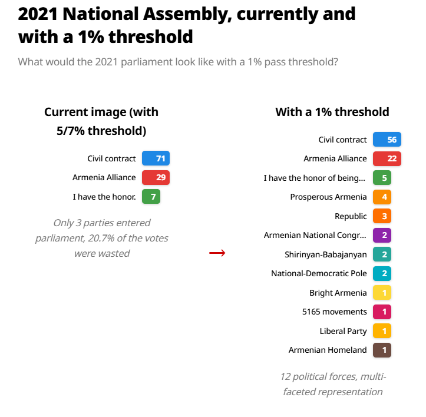
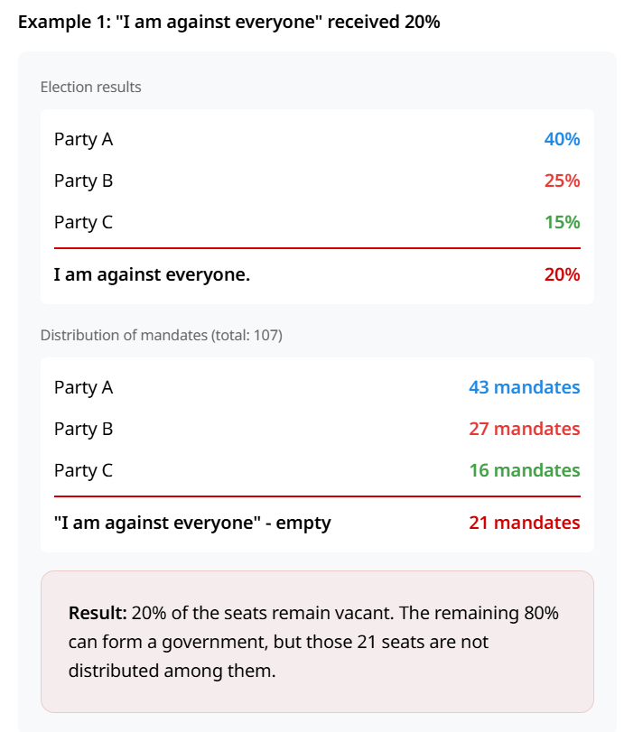
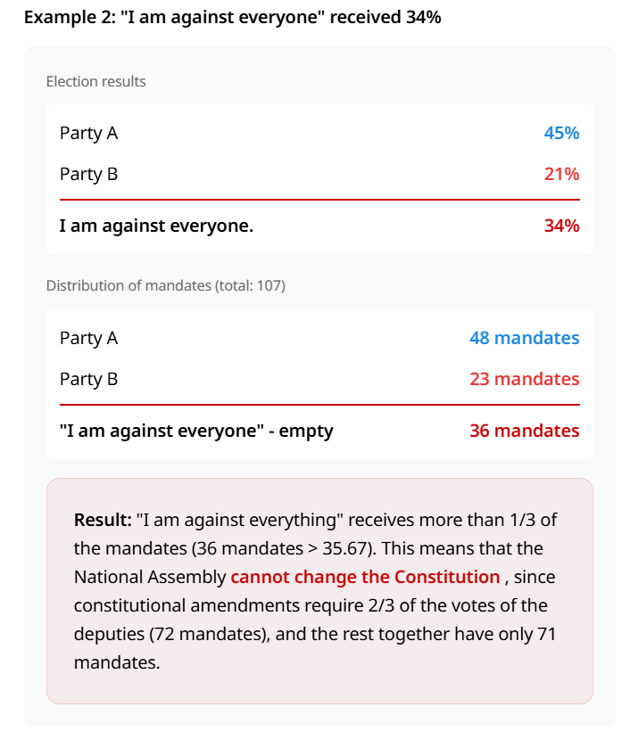

[WIP] — Political Self-Dissolution: Tendencies in Referendal Electoralism from America to Armenia
[WIP]: This article is in progress and may change substantially.
On January 29, 2026, an Armenian political movement, "I Am Against Everyone" (Bolorin dem yern, Բոլորին դեմ եմ), announced that it will register as a political party and participate in the country's parliamentary elections in June.
The party will be one of several parties competing in what is anticipated to be a pivotal election for the country given the current international and regional attention being paid to the country on the topics of infrastructure, regional cooperation, and investment.
The party claims to be independently funded, has been represented in the press by members Hovsep Ghazaryan, and Mikael Nahapetyan, and the membership, which currently sits around 730 members, includes several young people working in IT.
The significance of the membership composition is cast in the context of Armenia being a country with a vibrant technology scene – recently dubbed the Armenian Silicon Valley and the benefactor of a recent announcement of U.S. approval to export NVIDIA chips to Armenia – as well as several recent experiments with large scale deliberative democracy and citizen assemblies such as Future Armenian, and some experiments in the same field using technology platforms such as Armagora.
This article will lay out the core principles of the movement and what makes it unique, and look back to a perhaps forgotten historical echo of this type of campaign pursued by Larry Lessig, a professor of Law, researcher of internet governance, and one-time candidate for US president, as well as pose some open questions on the viability and place of these types of movements.
I Am Against Everyone: A Protest Vote With A Bite
"I Am Against Everyone" is campaigning on getting into parliament, making three reforms to Armenia's election system, dissolving after 100 days, placing limits on the ability for party members to run for re-election, and holding snap elections using the new electoral system.1
The three changes they propose are:
- Removal of "Stable Majority", which means "a political party that wins a majority of parliamentary mandates but receives less than 52% of the total will be granted additional mandates to reach the 52% threshold.”.
- Lowering the threshold to entering parliament from 4% to 1%. [Fig.1]
- Adding an "Against Everyone" option for voters, which rather than just being a signaling mechanism would also affect the make up of the number of seats/mandates in parliament and the ability for the assembly to make constitutional changes. [Fig.2 & Fig.3]2



Historical Echos: Risks, Reflections, and New Tendencies
Upon learning about this project I shared it with Metagov, an online community exploring the edges of governance, both online and offline. I posted it along with this note:
Obliviously, granting parliamentary power to a movement basically running on targeted electoral reform seems like a risky move, but never the less, in the light of other democratic reform processes in the country (such as prior work around citizen assemblies) it's still interesting to see a movement campaigning on this kind of issue (especially when this election is widely seen as being critical for the recent international developments happening in the region and which hinge in a significant part on the ability to make constitutional changes for those developments to be realized).
Anyone have insights into this movement, or know of other examples of parties running on this kind of time-limited mandate framing elsewhere?
Liz Barry, Executive Director at Metagov, pointed me towards Professor Lawrence Lessig's brief 2015 run for President of the United States in which “he had a single legislative agenda to pass, after which he would resign, and pass the office to his Vice President which was in the process of being crowd-selected on his website. He describes this style of candidacy as a form of "referendum" on his specific structural reform." His primary reform was called the Citizen Equality Act of 2017.3
[The] Citizen Equality Act of 2017 […] would provide every voter a voucher to fund the campaign of his choice. The act would provide significant amounts of money to candidates but in smaller contributions from a lot more people. Lessig says he would also make Election Day a national holiday so everyone could get to the polls. (NPR, 2015)
Lessig's campaign is interesting not only for its shape and focus, but also given his background as a researcher and policy advocate around digital/internet governance and copyright law, drawing some parallels with the base of "I Am Against Everyone".
While Lessig's campaign was ultimately unsuccessful, with him noting that the idea of a time-limited mandate was "a total bust", the reappearance of this type of campaign in Armenia a decade later, poses some open questions for consideration around these types of movements and their potential for success.
Open Questions
- What lessons can be drawn from previous single-issue or time-limited political campaigns, such as Lawrence Lessig's 2015 presidential run, and what factors have shaped their outcomes?
- What historical or international precedents exist for movements that campaign primarily on targeted electoral reform or dissolution, and how have these efforts evolved over time?
- How can one assess the emergence of "referendal electoralism" as a broader trend — are recent campaigns indicative of a developing tendency toward this mode of political action?
- What mechanisms, if any, can time-limited movements employ to build public trust and demonstrate intent to relinquish power after achieving their stated goals, rather than perpetuating their own influence?
- How does public perception of time-limited mandates differ across political systems—for example, between majority two-party systems like the United States and parliamentary systems such as Armenia — and what challenges or opportunities does this present?
- Finally, in what ways might contemporary developments in digital and internet governance influence the organization, transparency, or effectiveness of movements advocating for structural political reform today?
Footnotes
- The full declaration of party intent for "I Am Against Everyone". ↩
- See the "None of the above" page on Wikipedia for a survey of ways in which this type of ballot option is implemented across different countries. ↩
Have comments or want to discuss? Email me at centralizedhosting@gmail.com.